청소년상담사-2급(1교시) (2019-10-05 기출문제)
1과목: 청소년 상담의 이론과 실제
1. 개인심리학의 인간관에 해당하지 않는 것은?
- 전체적 존재
- 사회적 존재
- 객관적 존재
- 창조적 존재
- 목표지향적 존재
(정답률: 59%)

2. 정신분석에서 주장하는 신경증적 불안에 관한 설명으로 옳은 것은?
- 양심에 대한 두려움이다.
- 외부로부터의 위협에서 비롯된다.
- 초자아와 자아 간의 갈등에서 비롯된다.
- 실제적인 위협으로부터 개인을 보호하는데 기여한다.
- 원초아의 추동이 자아를 압도할 때 나타나는 현상이다.
(정답률: 55%)
3. 다음 ( )에 들어갈 학자는?
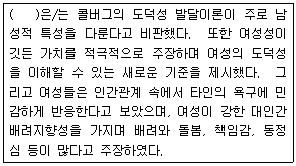
- 벰(S. Bem)
- 밀러(J. Miller)
- 브라운(D. Brown)
- 길리건(C. Gilligan)
- 코미어(W. Cormier)
(정답률: 65%)
4. 얄롬(I. Yalom)이 제시한 인간의 궁극적 관심에 해당하는 것을 모두 고른 것은?
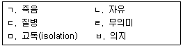
- ㄱ, ㄴ, ㄷ, ㄹ
- ㄱ, ㄴ, ㄹ, ㅁ
- ㄴ, ㄷ, ㅁ, ㅂ
- ㄴ, ㄹ, ㅁ, ㅂ
- ㄷ, ㄹ, ㅁ, ㅂ
(정답률: 74%)
5. 인간중심 상담에서 가치의 조건화에 관한 설명으로 옳지 않은 것은?
- 실현경향성 성취를 방해한다.
- 중요한 타인의 가치를 내면화한 결과이다.
- 충분히 기능하는 인간으로의 발달을 저해한다.
- 이상적 자기와 현실적 자기의 거리를 가까워지게 한다.
- 주관적으로 경험하는 사실을 왜곡하고 부정하게 만든다.
(정답률: 71%)
6. 분석심리학 이론에서 원형에 해당하는 것을 모두 고른 것은?
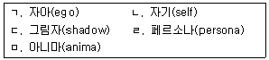
- ㄱ, ㄷ, ㅁ
- ㄴ, ㄹ, ㅁ
- ㄱ, ㄴ, ㄷ, ㄹ
- ㄱ, ㄷ, ㄹ, ㅁ
- ㄴ, ㄷ, ㄹ, ㅁ
(정답률: 63%)
7. 현실치료에 관한 설명으로 옳지 않은 것은?
- 인간을 자율적이고 책임감 있는 존재로 본다.
- 핵심개념으로 책임, 현실, 옳고 그름의 3R이 있다.
- 바람파악, 계획하기, 행하기, 평가의 순으로 상담을 진행한다.
- 전행동은 행하기, 생각하기, 느끼기, 생리적 반응의 4가지 요소로 구성된다.
- 인간의 기본 욕구에는 생존, 사랑과 소속, 힘과 성취, 자유, 즐거움이 있다고 본다.
(정답률: 38%)
8. 다음 내용에 해당하는 상담이론은?
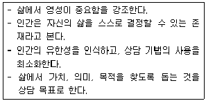
- 정신분석
- 개인심리학
- 인간중심 상담
- 실존주의 상담
- 게슈탈트 상담
(정답률: 60%)
9. 합리정서행동상담에서 인지적 기법에 해당하지 않는 것은?
- 독서요법
- 역할 연기
- 인지적 과제
- 내담자 언어 변화시키기
- 비합리적 신념 논박하기
(정답률: 58%)
10. 교류분석에서 상담자의 역할로서 옳지 않은 것은?
- 상담자와 내담자는 상담과정에서 계약을 맺어야 한다.
- 교류분석 상담에서는 변화에 초점을 맞추지 않고, 통찰을 중요시 한다.
- 교류분석 상담에서는 특수한 계약을 강조하고 책임을 분담하도록 한다.
- 내담자가 비효율적인 결정을 했던 과거의 불리한 조건들을 탐색하도록 돕는다.
- 교류분석에서 상담자의 역할은 주로 교훈적이고, 교육자의 역할을 하며 용기를 준다.
(정답률: 54%)
11. 다음 사례에서 내담자의 호소와 상담자 반응을 통해 드러난 접촉경계 혼란은?
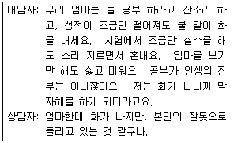
- 반전
- 투사
- 융합
- 내사
- 자의식
(정답률: 39%)
12. 다음 사례에서 내담자의 호소와 상담자 반응에 드러난 인지치료에서의 인지왜곡은?
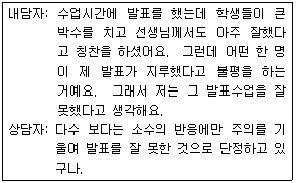
- 파국화
- 마음읽기
- 선택적 추론
- 과잉 일반화
- 이분법적 사고
(정답률: 66%)
13. 상담의 초기단계에서 내담자에게 흔히 나타나는 현상으로 옳지 않은 것은?
- 상담관계 유지를 위해 새로운 증상을 호소한다.
- 비자발적인 내담자의 경우 상담에 대한 저항이 일어난다.
- 자신의 문제를 즉시 해결해주기를 원한다.
- 자신의 문제가 무엇인지 정확히 알고 싶어 한다.
- 자기성찰보다는 주변 사람 및 환경을 문제의 원인으로 돌린다.
(정답률: 73%)
14. 상담기법 중 해석에 관한 설명으로 옳은 것을 모두 고른 것은?
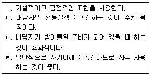
- ㄱ, ㄴ
- ㄱ, ㄷ
- ㄷ, ㄹ
- ㄱ, ㄴ, ㄷ
- ㄱ, ㄴ, ㄷ, ㄹ
(정답률: 52%)
15. 장기간 연락 없이 상담에 오지 않는 청소년 내담자에 대한 상담자의 조치로 적절한 것은?
- 내담자에게 아무런 조치 없이 계속 기다린다.
- 원인을 자신의 무능으로 돌리고 내담자에게 사과한다.
- 내담자의 선택을 존중하고, 향후 상담이 필요할 시 다시 찾아 올 수 있음을 알려준다.
- 내담자의 문제를 해결하기 위해 상담에 올 것을 계속 강요한다.
- 내담자에게 연락하지 않고 임의로 종결처리 한다.
(정답률: 82%)
16. 상담에서 감정을 중요하게 여기는 이유로 옳지 않은 것은?
- 감정표현이 호소문제의 즉각적인 해결로 이어지기 때문이다.
- 수용되지 않은 감정은 파괴적인 방법으로 표출되기 쉽기 때문이다.
- 자신의 감정과 접촉하는 것이 자기이해를 도울 수 있기 때문이다.
- 자신의 감정을 수용하게 되면 새로운 감정과 경험에 개방적이 될 수 있기 때문이다.
- 상담자의 정서적 민감성이 내담자를 이해하는데 도움이 되기 때문이다.
(정답률: 66%)
17. 상담자의 자기개방의 종류와 예시가 바르게 연결된 것을 모두 고른 것은?
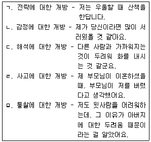
- ㄱ, ㄹ, ㅁ
- ㄴ, ㄷ, ㄹ
- ㄴ, ㄷ, ㅁ
- ㄱ, ㄴ, ㄹ, ㅁ
- ㄱ, ㄴ, ㄷ, ㄹ, ㅁ
(정답률: 48%)
18. 상담이론의 기능에 관한 설명으로 옳지 않은 것은?
- 상담과정과 기법 선택에 도움을 준다.
- 상담성과를 평가하는 근거를 제공한다.
- 상담목표 설정의 방향을 제시해준다.
- 후속 이론 연구를 위한 토대를 제공한다.
- 내담자의 심리상태를 정확하게 측정하게 해준다.
(정답률: 65%)
19. 다음 내담자의 진술에 대해 상담자가 사용한 기법과 그 예시가 옳게 연결된 것은?
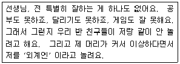
- 개방적 질문 - 네 마음을 표현할 친구는 있니?
- 직면 - 친구들이 '외계인' 이라고 놀릴 때 너는 어떻게 하니?
- 재진술 - 친구들과 놀고 싶은데 안 놀아주고 놀리기까지 해서 속상하구나.
- 즉시성 - 잘하는 게 없다고 했는데, 지금은 자기생각과 감정을 잘 표현한다고 느껴지는데.
- 감정반영 - 잘 하는 게 없어서 친구들이 안 놀아주고, 외모 때문에 놀림을 받는다는 말이지.
(정답률: 65%)
20. 다음 상황에서 공통적으로 적용할 수 있는 상담기법으로 옳은 것은?
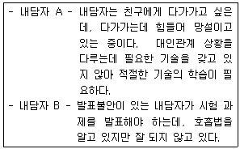
- 행동시연
- 체계적 둔감법
- 행동조성
- 의사결정 돕기
- 내담자의 감정표현 돕기
(정답률: 63%)
21. 청소년상담에 관한 설명으로 옳은 것은?
- 청소년의 당면한 문제 해결에만 초점을 둔다.
- 다양한 매체를 활용한 상담을 하기보다 대면상담에 주력한다.
- 문제의 예방은 교육적 차원이므로 상담목표에 포함되지 않는다.
- 청소년상담과 성인상담은 목표나 방법 등에 있어서 차이가 없다.
- 청소년뿐만 아니라 청소년 관련인과 청소년 관련기관도 대상에 포함된다.
(정답률: 74%)
22. 상담의 비밀보장에 관한 원칙으로 옳지 않은 것은?
- 녹음 및 녹화에 관해 내담자의 동의를 구해야한다.
- 집단상담을 시작할 때 비밀보장의 중요성과 한계를 명확히 설명한다.
- 상담기록을 전자정보의 형태로 보관할 경우 외부자의 접근을 철저히 차단한다.
- 교육이나 출판 시 익명성이 보장된다면 내담자의 동의 없이 상담내용을 사용할 수 있다.
- 전염성이 강한 치명적인 질병이 있는 내담자가 치료를 거부할 경우 비밀을 보장할 수 없다.
(정답률: 75%)
23. 전화상담에 관한 설명으로 옳지 않은 것은?
- 단회로 진행되는 경우가 많다.
- 신속하게 도움을 요청하는 것이 가능하다.
- 익명성으로 인해 성문제 등 드러내기 어려운 주제로 상담하는 경우가 많다.
- 상습적 음란전화나 언어폭력이 있을 경우, 강력한 대처가 필요하다.
- 대면상담에 비해 내담자에 대한 종합적인 이해를 할 수 있다.
(정답률: 81%)
24. 다음 상황에서 상담자가 역전이를 치료적으로 활용하는 방법으로 옳지 않은 것은?
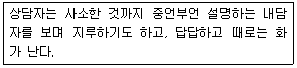
- 답답하고 화나는 자신의 감정의 원인을 살펴본다.
- 다른 사람과의 관계에서 내담자가 주로 어떤 피드백을 받아 왔는지를 탐색한다.
- 내담자에 대한 상담자의 마음을 진솔하게 표현한다.
- 내담자가 상담자에게 주는 영향을 인식하고, 내담자를 이해하는 도구로 활용한다.
- 내담자와의 상담을 중단하고, 수퍼비전을 받는 것이 필요하다.
(정답률: 60%)
25. 다음 사례에 나타난 상담자의 개입 활동은?
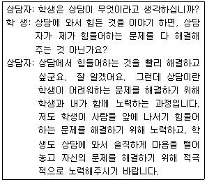
- 사례개념화
- 상담목표의 설정
- 비밀보장의 구조화
- 상담여건의 구조화
- 상담관계에 대한 구조화
(정답률: 72%)
2과목: 상담연구방법론의 기초
26. 다음에 나타난 연구패러다임에 관한 설명으로 옳은 것은?
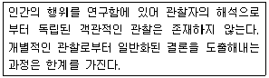
- 행위자가 자신의 경험에 부여하는 의미의 파악을 중시한다.
- 방법론적 일원주의를 주장한다.
- 연구현상의 계량화를 강조한다.
- 탐구과정에서 가치중립성을 전제한다.
- 관찰에 근거하지 않은 지식의 공허함을 주장한다.
(정답률: 43%)
27. 통계적 가설검정에 관한 설명으로 옳지 않은 것은?
- 1종 오류 확률은 영가설이 참인데도 영가설을 기각하는 확률이다.
- 통계적 검정력은 표본크기와 무관하다.
- 1종 오류의 허용범위는 유의수준이다.
- 2종 오류 확률은 영가설이 거짓인데도 영가설을 채택하는 확률이다.
- 설정한 유의수준은 2종 오류의 크기에 영향을 미친다.
(정답률: 49%)
28. 단순회귀 모형 Yi=b0+b1Xi+εi과 결정계수 R2에 관한 설명으로 옳은 것을 모두 고른 것은?
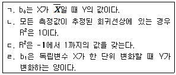
- ㄱ, ㄴ
- ㄱ, ㄷ
- ㄴ, ㄹ
- ㄱ, ㄷ, ㄹ
- ㄴ, ㄷ, ㄹ
(정답률: 35%)
29. 상담윤리의 일반적 원칙 중 다음에서 강조하고 있는 원칙은?
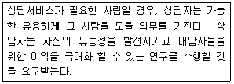
- 자율성(autonomy) 원칙
- 무피해(nonmaleficence) 원칙
- 정의(justice) 원칙
- 진실성(veracity) 원칙
- 선행(beneficence) 원칙
(정답률: 49%)
30. 문화기술지 연구(ethnographic research)에 관한 설명으로 옳지 않은 것은?
- 수와 양으로 표현할 수 있는 자료에 주목한다.
- 일반적이지 않은 특성을 상세하고 심층적으로 이해하고자 할 때 활용된다.
- 연구자의 오랜 시간 현장 참여를 통하여 자료를 수집한다.
- 특정 현상에 대한 의미의 차이 파악을 중시한다.
- 연구상황을 인위적으로 조작하지 않는다.
(정답률: 50%)
31. 다음과 같은 특성을 모두 나타내는 연구유형은?
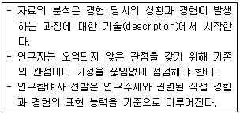
- 조사 연구
- 메타 연구
- 실험 연구
- 문헌 연구
- 현상학적 연구
(정답률: 48%)
32. Cronbach 에 관한 설명으로 옳은 것을 모두 고른 것은?
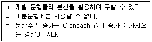
- ㄱ
- ㄴ
- ㄱ, ㄷ
- ㄴ, ㄷ
- ㄱ, ㄴ, ㄷ
(정답률: 50%)
33. 다음 내용에서 ( ㄱ )과 ( ㄴ )이 옳게 연결된 것은?
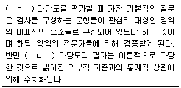
- ㄱ: 내용 ㄴ: 행동
- ㄱ: 공인 ㄴ: 행동
- ㄱ: 행동 ㄴ: 내용
- ㄱ: 내용 ㄴ: 준거관련
- ㄱ: 구인 ㄴ: 준거관련
(정답률: 50%)
34. 3가지 상담기법의 효과 차이를 검증하기 위하여 각 집단에 100명씩 총 300명을 무선 배치하였다. 분석 결과가 다음과 같을 때 옳지 않은 것은? (단, 단순변량분석의 모든 가정은 충족된 것으로 간주한다.)
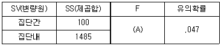
- 집단간 제곱합의 자유도는 2이다.
- 집단내 제곱합의 자유도는 297이다.
- A값은 10이다.
- 분석 결과, 유의수준 0.⑤에서 영가설은 기각된다.
- 분석 결과, 3가지 상담기법의 효과는 각각 다른 것으로 결론 내릴 수 있다.
(정답률: 39%)
35. 모의상담연구에 관한 설명으로 옳지 않은 것은?
- 독립변수의 수준 조작을 통해 실험 상황을 통제할 수 있다.
- 상담과정 단순화를 통해 연구 결과 해석이 용이해진다.
- 연구결과의 일반화 가능성이 높다.
- 대리(surrogate) 내담자의 활용을 통해 실제 상담연구의 한계를 약화시킬 수 있다.
- 실험 과정에서 발생할 수 있는 윤리적 딜레마를 피할 수 있다.
(정답률: 49%)
36. 다음 사례에 나타난 연구설계의 일반적인 특징에 관한 설명으로 옳은 것은?
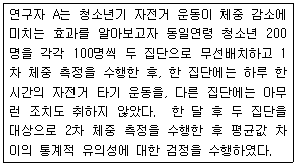
- 실험결과의 내적타당도가 낮다.
- 실제 상황에 적용하기 용이하다.
- 독립변인의 수를 늘릴 수 있다.
- 성숙(maturation)으로 인한 문제는 통제된다.
- 일반적으로 경로분석을 통해 처치의 효과를 검정한다.
(정답률: 30%)
37. 측정과 척도에 관한 설명으로 옳지 않은 것은?
- 측정의 수준에 따라 명목, 서열, 등간, 비율측정으로 구분된다.
- 등간측정은 서열관계를 측정할 수 있다.
- 등간측정은 측정 점수를 바탕으로 몇 배 더 크다는 표현이 가능하다.
- 비율척도에는 절대 영점이 존재한다.
- 서열측정값은 연구대상이 갖는 특성의 상대적인 정도를 의미한다.
(정답률: 43%)
38. 다음 사례에 나타난 표본추출기법에 관한 설명으로 옳은 것은?
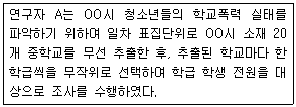
- 모집단을 구성하는 모든 개별요소들에 고유번호가 필요하다.
- 비확률표본추출 기법에 해당한다.
- 표집틀을 확보하고 있지 못한 상황에 유용하다.
- 모집단에 대한 사전 지식이 없을 경우에 활용된다.
- 내적으로 이질적이고 외적으로 동질적인 단위를 추출한다.
(정답률: 38%)
39. 조작화와 조작적 정의에 관한 내용으로 옳지 않은 것은?
- 조작적 정의는 정의되는 조건을 확인하는데 필요한 특성을 추상화하는 것이다.
- 개념을 조작화할 때는 속성들에 대한 변동성의 범위를 분명히 해야 한다.
- 변인의 어떤 속성을 조작할 것인가에 대해 결정해야 한다.
- 주어진 변인을 구성하고 있는 다양한 속성에 대한 정밀성을 고려해야 한다.
- 조작화는 변인들을 구성하고 있는 속성들을 구체화하기 위해 단일지표를 사용할 수 있다.
(정답률: 44%)
40. 가설에 관한 설명으로 옳지 않은 것은?
- 연구가설은 사회현상에 관한 이론으로부터 도출될 수 있다.
- 연구가설은 작업가설이라고도 한다.
- 가설은 연구를 유도하기 위한 잠정적인 진술이다.
- 복잡한 가설일수록 좋은 가설이다.
- 영가설은 연구가설과 논리적으로 반대의 입장을 취한다.
(정답률: 59%)
41. 구인타당도의 검증 절차 순서로 옳은 것은?
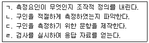
- ㄱ - ㄴ - ㄹ - ㄷ
- ㄱ - ㄷ - ㄹ - ㄴ
- ㄱ - ㄹ - ㄷ - ㄴ
- ㄴ - ㄱ - ㄷ - ㄹ
- ㄴ - ㄷ - ㄹ - ㄱ
(정답률: 44%)
42. 외적타당도와 관련된 내용으로 옳은 것을 모두 고른 것은?
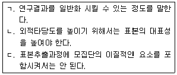
- ㄱ
- ㄱ, ㄴ
- ㄱ, ㄷ
- ㄴ, ㄷ
- ㄱ, ㄴ, ㄷ
(정답률: 43%)
43. 실험설계가 충족해야 할 조건이 아닌 것은?
- 종속변수값 간의 비교
- 독립변수의 조작
- 외생(extraneous)변수의 통제
- 시계열 종단자료 이용
- 무작위 집단 배정
(정답률: 46%)
44. 상관계수(r)에 관한 설명으로 옳지 않은 것은?
- r = 0이면 상관관계가 없음을 뜻한다.
- 동일한 두 변수의 측정단위가 변하면 상관계수는 변한다.
- -1과 +1 사이의 값을 갖는다.
- r = -.75는 r = +.25보다 상관관계가 더 크다.
- 공변동성(covariation)에 대한 표준화된 측정치이다.
(정답률: 32%)
45. 실험설계에 해당되지 않는 것은?
- 1집단 시계열설계
- 무작위 배정 요인설계
- 통제집단 사후검사설계
- 솔로몬4집단설계
- 통제집단 사전-사후검사설계
(정답률: 36%)
46. 연구윤리의 내용으로 옳은 것을 모두 고른 것은?
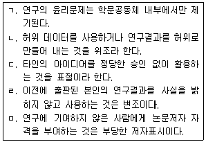
- ㄱ, ㄴ, ㄷ
- ㄱ, ㄷ, ㄹ
- ㄴ, ㄷ, ㅁ
- ㄴ, ㄹ, ㅁ
- ㄷ, ㄹ, ㅁ
(정답률: 49%)
47. 표본크기를 결정하는 요인으로 옳은 것을 모두 고른 것은?
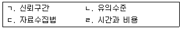
- ㄱ, ㄴ
- ㄱ, ㄷ
- ㄱ, ㄴ, ㄹ
- ㄴ, ㄷ, ㄹ
- ㄱ, ㄴ, ㄷ, ㄹ
(정답률: 56%)
48. 통계적 가설 검정 절차의 순서로 옳은 것은?
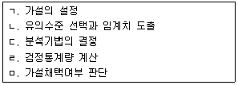
- ㄱ - ㄴ - ㄷ - ㅁ - ㄹ
- ㄱ - ㄴ - ㄹ - ㄷ - ㅁ
- ㄱ - ㄷ - ㄴ - ㄹ - ㅁ
- ㄴ - ㄱ - ㄹ - ㅁ - ㄷ
- ㄷ - ㄱ - ㄹ - ㅁ - ㄴ
(정답률: 45%)
49. 질적 연구방법에 관한 설명으로 옳지 않은 것은?
- 문화기술지연구는 상이한 문화의 사회구성원들이 사회현상에 대처하는 방식에 대한 연구에 유용하다.
- 현상학적 연구는 사람들에 대한 상세한 기술을 통하여 인간의 경험을 검토한다.
- 해석학적 연구는 문헌과 서면으로 전달된 의미를 해석하는 연구이다.
- 행위연구는 행위자들이 동일한 관점에서 상황을 이해하고 그 상황을 변화시켜야 하는지 여부를 판단할 수 있도록 한다.
- 사례연구는 특정 사례에 대한 종합적 기술과 분석을 중시한다.
(정답률: 45%)
50. 사례지향적(case-oriented) 연구의 특징으로 옳지 않은 것은?
- 사례유형화를 중심으로 진행되는 연구이다.
- 역사적 맥락을 검토하고 관련 자료를 다룬다.
- 종합적, 해석적 설명을 지향한다.
- 유형화된 다양성의 이해를 바탕으로 한다.
- 변수들 간의 관계를 설명하는 연구이다.
(정답률: 60%)
3과목: 심리측정 평가의 활용
51. 가드너(H. Gardner)의 다중지능에 해당하지 않는 것은?
- 자연적(naturalist) 지능
- 내적(intrapersonal) 지능
- 그림 유사성(pictorial analogies) 지능
- 음악적(musical) 지능
- 대인관계(interpersonal) 지능
(정답률: 47%)
52. 다음의 특성을 모두 포함하는 MMPI-A의 내용척도는?
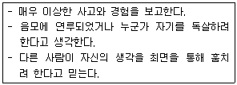
- 냉소적 태도(CYN)
- 기태적 정신상태(BIZ)
- 낮은 자존감(LSE)
- 사회적 불편감(SOD)
- 가정 문제(FAM)
(정답률: 53%)
53. 허트(M. Hutt)의 BGT 평가항목에서 형태의 일탈에 속하지 않는 것은?
- 폐쇄 곤란
- 교차 곤란
- 곡선 묘사 곤란
- 각의 변화
- 보속성
(정답률: 45%)
54. 개발자와 심리검사의 연결이 옳은 것은?
- 해서웨이(S. Hathaway): Army-⍺
- 카텔(J. Cattell): TAT
- 머레이(H. Murray): Stanford-Binet
- 써스톤(L. Thurstone): PMA
- 엑스너(J. Exner): TCI
(정답률: 31%)
55. 피어슨(Pearson) 적률 상관계수에 관한 설명으로 옳은 것은?
- -1.00에서 +1.00까지 범위를 갖는다.
- 정적상관은 한 변인의 값이 감소하면 다른 변인의 값이 증가하는 경우를 말한다.
- 부적상관은 한 변인의 값이 증가하면 다른 변인의 값이 증가하는 경우를 말한다.
- 한 분포 내에서 점수들의 서로 다른 정도를 요약하는 측정치를 말한다.
- 한 분포 내에서 최고 점수와 최저 점수 간의 차이이다.
(정답률: 36%)
56. 홀랜드(J. Holland)의 직업적 성격유형에서 다음의 내용을 모두 포함하는 것은?
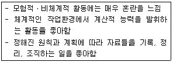
- 실재적(Realistic) 유형
- 탐구적(Investigative) 유형
- 관습적(Conventional) 유형
- 기업적(Enterprising) 유형
- 사회적(Social) 유형
(정답률: 55%)
57. 로샤(Rorschach)검사의 구조변인과 해석의 연결이 옳은 것은?
- X+% : 지각적 왜곡 또는 지각적 적절성의 결여 정도를 평가
- An+Xy : 자기에 대한 시각이 염세적이고 비관적임을 암시하는 평가
- Fr+rF : 정보검색에 에너지와 노력을 많이 소모하는 경향 평가
- Xu% : 정서적 자극에 대한 반응성 평가
- CDI : 대인관계나 사회적 활동에서 대응능력이 손상된 것을 탐지해내는 평가
(정답률: 41%)
58. 심리검사의 제작 단계를 순서대로 바르게 나열한 것은?
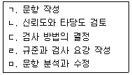
- ㄱ → ㄷ → ㄴ → ㅁ → ㄹ
- ㄷ → ㄱ → ㅁ → ㄴ → ㄹ
- ㄷ → ㄹ → ㄴ → ㅁ → ㄱ
- ㄹ → ㄱ → ㄴ → ㅁ → ㄷ
- ㅁ → ㄱ → ㄴ → ㄷ → ㄹ
(정답률: 56%)
59. HTP 검사결과에 관한 해석으로 적절한 것을 모두 고른 것은?
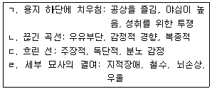
- ㄱ, ㄴ
- ㄴ, ㄹ
- ㄱ, ㄴ, ㄷ
- ㄱ, ㄷ, ㄹ
- ㄱ, ㄴ, ㄷ, ㄹ
(정답률: 46%)
60. MMPI-2의 척도4에서 Harris-Lingoes 소척도에 관한 설명으로 옳지 않은 것은?
- PD1(Familial Discord): 비판적이고, 비지지적이며, 독립성을 방해하는 가족을 가진다.
- PD2(Authority Conflict): 사회적 규칙에 반항적이고, 사회적 규범을 존중하지 않는 방식의 옳고 그름을 가진다.
- PD3(Social Imperturbability): 쉽게 당황하고, 관계를 시작하기를 꺼려하며, 사회적 상황을 불편해하고 수줍어한다.
- PD4(Social Alienation): 사람들로부터 소외되어 있고 이해받지 못한다고 생각한다.
- PD5(Self-Alienation): 자신에 대해 불행해하고 과거 행동에 대해 죄책감과 후회를 보인다.
(정답률: 37%)
61. MMPI-2에서 내용척도와 보충척도에 공통으로 포함되는 척도는?
- 불안
- 억압
- 공포
- 우울
- 분노
(정답률: 36%)
62. NEO-PI에서 다음의 내용을 모두 포함하는 것은?
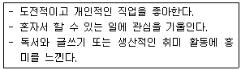
- E-O+(낮은 E, 높은 O)
- N-O-(낮은 N, 낮은 O)
- E-A-(낮은 E, 낮은 A)
- O-C-(낮은 O, 낮은 C)
- A-C-(낮은 A, 낮은 C)
(정답률: 46%)
63. TAT에서 다음의 반응 특징을 모두 포함하는 진단명으로 적절한 것은?
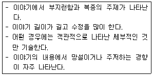
- 조현병
- 양극성장애
- 주요우울장애
- 강박장애
- 망상장애
(정답률: 57%)
64. 카텔(R. Cattell)의 결정지능에 해당하는 것을 모두 고른 것은?
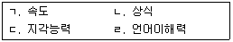
- ㄱ, ㄴ
- ㄱ, ㄷ
- ㄴ, ㄷ
- ㄴ, ㄹ
- ㄷ, ㄹ
(정답률: 44%)
65. MMPI-2에 관한 설명으로 옳지 않은 것은?
- A유형 행동(TPA) 척도는 내용척도에 속한다.
- 내용척도는 논리적 방법과 통계적 방법을 조합하여 개발되었다.
- 무응답 척도의 경우 원점수 30 이상이면 프로파일이 무효일 가능성이 높다.
- TRIN척도가 '아니다' 방향으로 유의하게 상승해 있다면 S척도의 상승을 타당하게 해석하기 어렵다.
- 재구성 임상척도의 개발 1단계는 척도2와 척도9의 문항을 요인 분석하여 의기소침 요인을 추출하는 것이었다.
(정답률: 37%)
66. 공포자극 상황과 같은 실제 상황에서 전형적으로 나타나는 생각을 기록하게 하는 인지기록 방법은?
- 사고목록 작성하기(thought listing)
- 산출법(production methods)
- 사고 표집(thought sampling)
- 명확한 사고(articulated thoughts)
- 생각 중얼거리기(think aloud)
(정답률: 20%)
67. 대학생의 진로탐색 행동을 5점 척도로 측정하는 예비검사의 문항분석 결과표에서 우선적으로 선택해야 할 문항은?
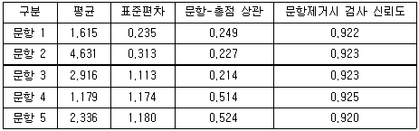
- 문항 1
- 문항 2
- 문항 3
- 문항 4
- 문항 5
(정답률: 37%)
68. 규준참조(norm-referenced)점수에 관한 설명으로 옳은 것을 모두 고른 것은?
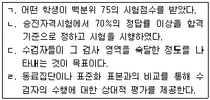
- ㄱ, ㄴ
- ㄱ, ㄷ
- ㄱ, ㄹ
- ㄴ, ㄷ
- ㄴ, ㄹ
(정답률: 35%)
69. K-WAIS와 비교하여 K-WAIS-Ⅳ의 특징으로 옳지 않은 것은?
- 시간 보너스의 비중을 늘렸다.
- 언어적 지시를 단순화하였다.
- 시각적 자극의 크기를 확대하였다.
- 산출 지능지수의 범위를 확장하였다.
- 수행과정의 운동 요구를 감소시켰다.
(정답률: 27%)
70. 대학생인 A는 어린 시절부터 수줍음이 많고 익숙하지 않은 상황을 회피하는 행동을 보였다. 사람들과 거의 만나지 않으며 고립된 생활을 하던 A는 우울감을 호소하며 학교 상담소를 방문하였다. A의 특징을 반영하는 심리검사 결과로 적절한 것을 모두 고른 것은?
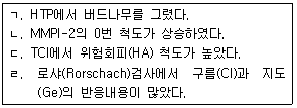
- ㄱ, ㄴ, ㄷ
- ㄱ, ㄴ, ㄹ
- ㄱ, ㄷ, ㄹ
- ㄴ, ㄷ, ㄹ
- ㄱ, ㄴ, ㄷ, ㄹ
(정답률: 31%)
71. 로샤(Rorschach)검사에서 “두 마리의 고양이가 서로 속삭이고 있다”라는 반응의 결정인 채점기호로 옳은 것은? (단, 쌍반응 여부는 고려하지 않음)
- Ma
- Mp
- FMa
- FMp
- F
(정답률: 16%)
72. MBTI에서 판단기능에 해당하는 지표는?
- 외향-내향
- 감각-직관
- 사고-감정
- 판단-인식
- 사고-인식
(정답률: 34%)
73. 로샤(Rorschach)검사에 관한 설명으로 옳은 것은?
- 반응영역 S는 단독으로 기호화해야 한다.
- 수검자가 한 말을 그대로 기록하여야 한다.
- 수검자의 상상력이나 창의력이 발휘될 수 있도록 격려해 주어야 한다.
- 질문단계에서는 추가적인 새로운 반응을 확인하기 위해 주의를 기울여야 한다.
- 로샤(H. Rorschach)는 종합체계(comprehensive system)를 개발하였다.
(정답률: 52%)
74. TAT에 관한 설명으로 옳지 않은 것은?
- 욕구-압력 분석법의 첫 단계는 주인공을 찾는 것이다.
- 한 회기에 약 한 시간가량 두 번의 회기에 걸쳐 실시한다.
- 카드에 없는 자극이나 대상의 언급에 주목해서 그 의미를 해석한다.
- 백지 카드를 제외한 모든 카드에 사람이 등장한다.
- 상상력이 결여된 수검자에게는 16번 백지 카드의 유용성이 제한될 수 있다.
(정답률: 35%)
75. MMPI-2에서 K교정을 하는 임상척도를 묶은 것으로 옳은 것은?
- 1, 3
- 2, 9
- 4, 6
- 5, 0
- 7, 8
(정답률: 31%)
4과목: 이상심리
76. 이상행동에 관한 인지이론의 설명으로 옳은 것은?
- 개인 고유의 정서체계가 적응문제를 유발한다.
- 엘리스(A. Ellis)에 따르면 정서적 장애는 비합리적 신념을 초래한다.
- 벡(A. Beck)은 우울장애에 널리 쓰이는 치료법을 개발했다.
- 인지치료에 대한 효과는 실험연구로 검증하기 어렵다.
- 인지적 왜곡은 이상행동의 원인일 뿐 결과는 아니다.
(정답률: 36%)
77. 불안장애에 관한 설명으로 옳은 것은?
- 사회불안장애는 문화에 따른 유병률 차이가 없다.
- 그레이(J. Gray)에 따르면 불안과 긴밀한 뇌 영역은 변연계이다.
- 범불안장애는 심각한 근긴장을 동반하지 않는다.
- 약물치료는 불안을 가중시킨다.
- 사회불안장애에 가장 많이 동반되는 질환은 강박장애이다.
(정답률: 42%)
78. 아동ㆍ청소년기와 관련된 불안장애에 관한 설명으로 옳은 것은?
- 범불안장애는 다른 불안장애보다 평균 발병 연령이 빠르다.
- 선택적 함구증과 사회불안장애는 동반이환 되지 않는다.
- 성인과 비교해 수면곤란, 두통, 복통 등과 같은 신체증상이 두드러진다.
- 아동에게서 사회불안장애를 진단할 때는 성인과의 관계에서 불안해할 때만 진단해야 한다.
- 공포, 불안, 회피가 최소 6개월 이상 지속되어야 분리불안장애로 진단한다.
(정답률: 52%)
79. 정신장애의 이론적 접근과 치료방법의 연결이 옳은 것을 모두 고른 것은?
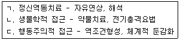
- ㄷ
- ㄱ, ㄴ
- ㄱ, ㄷ
- ㄴ, ㄷ
- ㄱ, ㄴ, ㄷ
(정답률: 54%)
80. 양극성 및 관련 장애에 관한 설명으로 옳은 것을 모두 고른 것은?
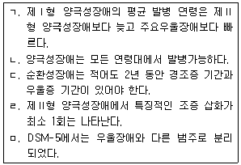
- ㄱ, ㄴ
- ㄴ, ㄹ
- ㄱ, ㄷ, ㄹ
- ㄴ, ㄷ, ㅁ
- ㄴ, ㄹ, ㅁ
(정답률: 49%)
81. 의사소통 장애에 관한 설명으로 옳지 않은 것은?
- 뇌의 발달지연에 따른 지능 저하가 필연적으로 수반된다.
- DSM-5에서는 미분류형 의사소통 장애를 포함해 5가지 하위유형이 있다.
- 아동기 수용성 언어장애는 표현성 언어장애를 동반한다.
- 사회적 의사소통 장애가 DSM-5에 새로 추가되었다.
- 양육방식도 큰 영향을 미치므로 부모-자녀관계 탐색이 필요하다.
(정답률: 49%)
82. 이상행동의 평가, 분류 및 진단에 관한 설명으로 옳지 않은 것은?
- 면담과 관찰, 다양한 검사를 활용한다.
- 지적장애를 경도, 중등도, 중증도, 최중증도로 분류하는 것은 차원적 분류에 따른 것이다.
- 낙인효과로 인해 내담자에게 자기이행적 예언의 결과가 나타날 수 있다.
- 특정 장애에 대한 기술의 정확성 여부를 보여주는 것이 진단의 신뢰도이다.
- 임상관찰에서 관찰자편견의 문제점이 제기된다.
(정답률: 36%)
83. 다음 사례에 적절한 진단명은?
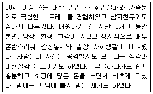
- 제Ⅱ형 양극성장애
- 조현정동장애
- 망상장애
- 경계성 성격장애
- 단기 정신병적 장애
(정답률: 46%)
84. DSM-5의 특징으로 옳은 것은?
- 문화적 맥락, 연령, 성별에 따른 정보를 간과한다.
- 하위체계가 단순화되었다.
- 아동ㆍ청소년기에 처음 진단되는 장애를 독립적으로 제시한다.
- 다축체계가 적용된다.
- 범주정보와 차원정보를 모두 제공한다.
(정답률: 41%)
85. 조현병 스펙트럼 장애에 관한 설명으로 옳지 않은 것은?
- 단기 정신병적 장애는 장애 삽화의 지속 기간이 최소 1주일 이상 1개월 이내로 나타나야 한다.
- 조현병은 잔류기를 거치면서 음성증상이 남기도 한다.
- 생화학적 접근에 따르면 도파민과 세로토닌의 과잉 분비는 조현병을 유발한다.
- 망상장애는 항정신병 약물개입이 쉽지 않다.
- 약물사용에 따른 사고ㆍ지각장애 감소는 심리치료의 효과를 높인다.
(정답률: 18%)
86. 신경발달장애에 관한 설명으로 옳은 것을 모두 고른 것은?
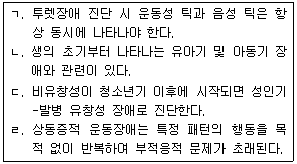
- ㄱ, ㄴ
- ㄱ, ㄷ
- ㄴ, ㄷ
- ㄴ, ㄷ, ㄹ
- ㄱ, ㄴ, ㄷ, ㄹ
(정답률: 50%)
87. 다음 사례에 해당하는 진단명에 관한 설명으로 옳지 않은 것은?
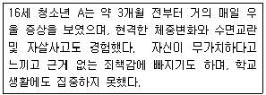
- 기분과 일치하지 않는 정신병적 양상이 동반되기도 한다.
- 좌불안석의 모습과 정신운동의 지연을 보여주기도 한다.
- 물질관련장애, 공황장애, 경계성 성격장애 등이 흔히 동반된다.
- 지나치게 과민하고 타인에게 공격적으로 반응한다.
- 고도의 언어적, 행동적 분노발작이 비정상적으로 나타난다.
(정답률: 34%)
88. 외상후 스트레스장애의 진단 기준 중 '인지와 감정의 부정적 변화'에 해당하는 것은?
- 집중력의 문제
- 과장된 놀람 반응
- 주요 활동에 대해 현저하게 저하된 흥미
- 민감한 행동이나 분노폭발
- 무모하거나 자기파괴적인 행동
(정답률: 43%)
89. 강박장애 환자의 침투적(intrusive) 사고에 관한 설명으로 옳지 않은 것은?
- 억제하려고 노력한다.
- 자아동조적이다.
- 자신의 책임감을 과도하게 인식한다.
- 사고-행위 융합의 인지적 오류가 개입된다.
- 의식에 떠오르는 원치 않는 불쾌한 생각을 의미한다.
(정답률: 42%)
90. 다음 진단 기준 모두에 해당하는 진단명은?
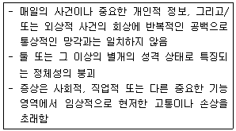
- 이인성-비현실감 장애
- 해리성 기억상실
- 해리성 둔주
- 해리성 정체성장애
- 조현양상장애
(정답률: 52%)
91. DSM-5의 추가 연구가 필요한 진단적 상태에 근거할 때, 다음 사례에 적절한 진단명은?
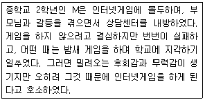
- 인터넷게임장애
- 인터넷도박장애
- 인터넷사용장애
- 인터넷게임중독
- 인터넷게임도박장애
(정답률: 27%)
92. 다음 사례에 적절한 진단명은?
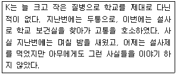
- 전환장애
- 히스테리
- 인위성 장애
- 신체증상장애
- 질병불안장애
(정답률: 42%)
93. 일주기 리듬 수면-각성 장애를 설명하는 생체시계와 관련된 내용으로 옳지 않은 것은?
- 생체시계는 뇌 시상하부의 시교차상핵(SCN)에 위치한다.
- 생체시계는 24시간보다 길기 때문에 취침/기상 시간을 조금씩 늦추는 것은 쉽지만 앞으로 당기는 것은 어렵다.
- 청소년들이 아침에 일찍 일어나기 힘들어 하는 이유 중 하나도 일주기 리듬에 기인한다.
- 청소년기에는 멜라토닌의 생성량이 많기 때문에 일주기 리듬이 쉽게 뒤로 밀릴 수 있다.
- 일주기 생체시계를 조절하는 동조인자 중 가장 큰 역할을 하는 것은 식사시간이다.
(정답률: 38%)
94. 노출장애에 관한 설명으로 옳지 않은 것은?
- 일명 바바리맨으로도 알려져 있다.
- 성기를 노출한 후 자신에게 실망하거나 죄의식을 느끼지 않는다.
- 낯선 사람과 성행위를 하려고 시도하는 경우는 거의 없다.
- 성행위 보다는 깜짝 놀라는 여성의 반응을 보고 성적 흥분과 쾌감을 느낀다.
- 자신의 성적 욕구를 충족시킬 목적으로 낯선 사람에게 자신의 성기를 노출하는 증상이다.
(정답률: 35%)
95. 청소년상담사 T는 내방한 청소년 B의 진단명이 적대적 반항장애인지 품행장애인지 고민하다가 품행장애로 진단하였다. 품행장애로 진단한 결정적 근거로 옳은 것은?
- 늘 화가 나 있고 따지기를 좋아한다.
- 규칙이나 지시를 따르지 않는다.
- 다른 사람의 인내심이나 한계를 시험하듯 극단의 행동을 한다.
- 지난 6개월 이내에 최소 2번 이상 악의적이거나 앙심을 품은 적이 있다.
- 물품이나 호감을 얻기 위해 또는 의무를 피하려고 거짓말을 자주 한다.
(정답률: 48%)
96. 경계성 성격장애의 증상과 생물학적 근거의 연결이 옳은 것은?
- 자살시도와 공격적 행동 - 세로토닌 저활성화
- 무계획적인 생활과 충동성 - 편도체의 저활성화
- 부정적 정서에 대한 낮은 통제성 - 해마의 저활성화
- 자살시도와 공격적 행동 - 편도체의 저활성화
- 부정적 정서에 대한 낮은 통제성 - 전전두엽의 저활성화
(정답률: 22%)
97. 폭식장애의 진단 기준에 해당하는 것을 모두 고른 것은?
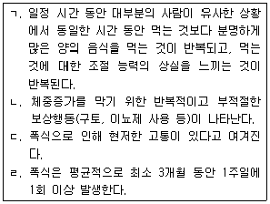
- ㄱ, ㄷ
- ㄴ, ㄹ
- ㄱ, ㄴ, ㄷ
- ㄱ, ㄷ, ㄹ
- ㄱ, ㄴ, ㄷ, ㄹ
(정답률: 28%)
98. 신경심리평가의 평가영역과 검사도구의 연결이 옳지 않은 것은?
- 기억 - WMS
- 언어 - Token Test
- 실행기능 - Boston Naming Test
- 시각구성능력 - BGT
- 지능 - WAIS
(정답률: 41%)
99. 다음의 증상을 호소하는 내담자의 진단명으로 옳은 것은?
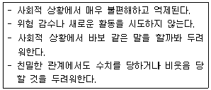
- 노출공포증
- 회피성 성격장애
- 외상후 스트레스장애
- 의존성 성격장애
- 광장공포증
(정답률: 58%)
100. 알코올 사용 장애나 중독에 의해 발생할 수 있는 질병들을 모두 고른 것은?
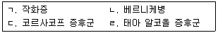
- ㄱ, ㄴ
- ㄱ, ㄹ
- ㄷ, ㄹ
- ㄱ, ㄴ, ㄹ
- ㄱ, ㄴ, ㄷ, ㄹ
(정답률: 39%)